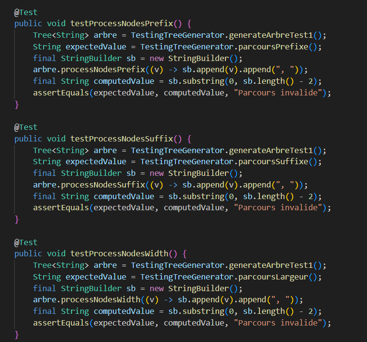
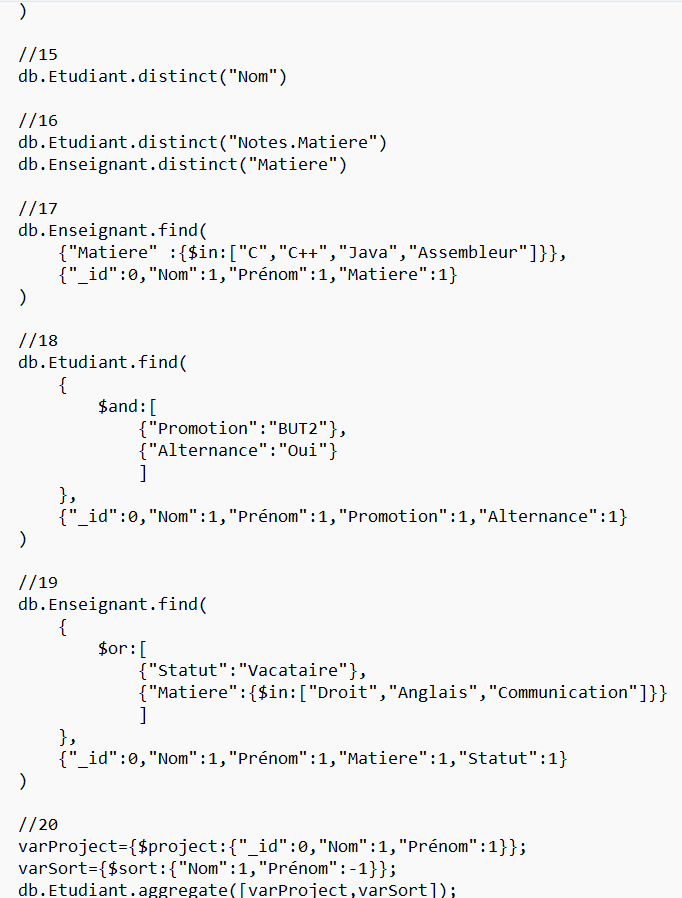
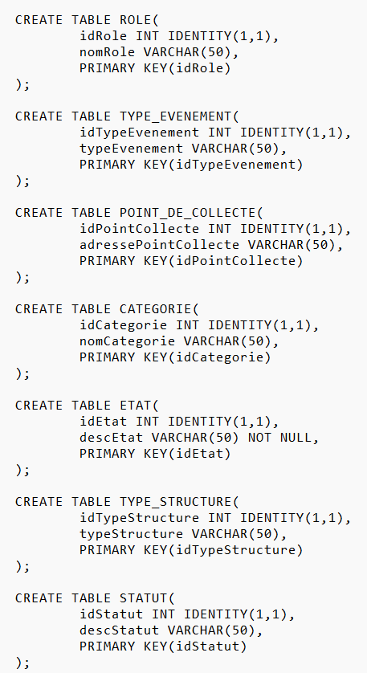
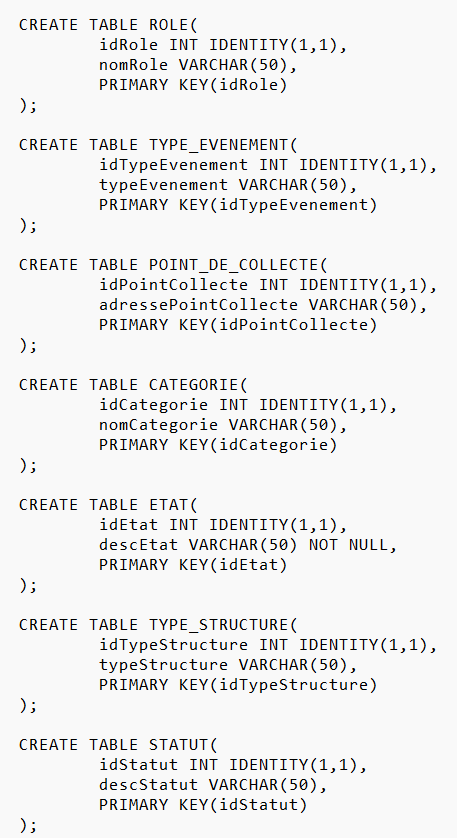
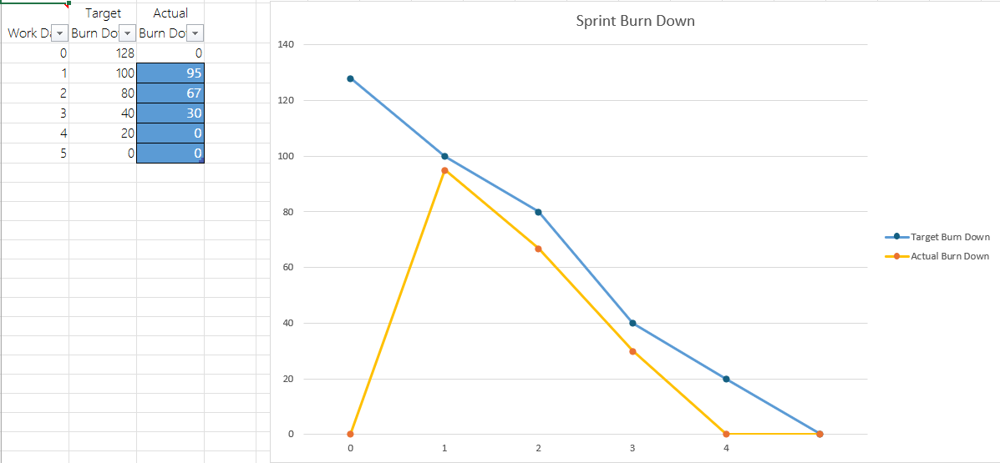
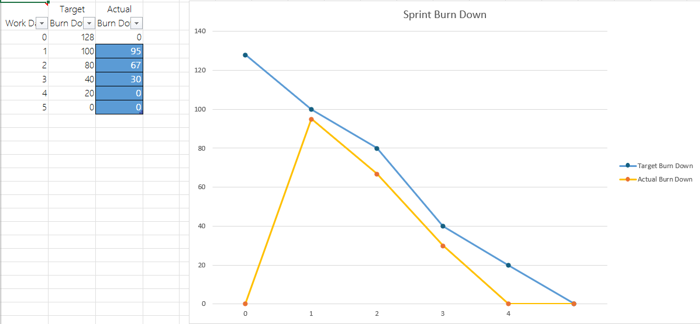
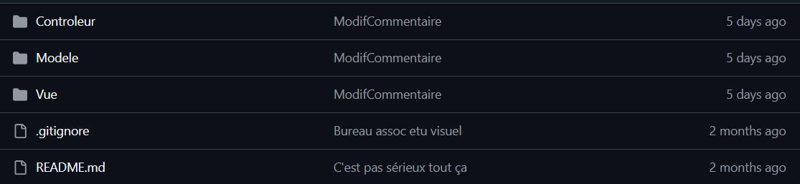

Compétence 1 : Réaliser
| Apprentissage Critique (Niveau 2) | Non Acquis | En Cours | Acquis |
|---|---|---|---|
| AC21.01 | Élaborer et implémenter les spécifications fonctionnelles et non fonctionnelles à partir des exigences | Difficulté à distinguer les besoins métiers des contraintes techniques de performance ou sécurité. | Spécifications identifiées mais l'implémentation souffre de dettes techniques sur les aspects non-fonctionnels. | Traduction exhaustive du cahier des charges en architecture modulaire fonctionnelle. |
| AC21.02 | Appliquer des principes d’accessibilité et d’ergonomie | Absence de sémantique HTML ou de gestion des contrastes (non-conformité WCAG). | Utilisation de frameworks UI mais manque de personnalisation pour les technologies d'assistance. | Interface respectant les 8 critères d'ergonomie et les standards A11y. |
| AC21.03 | Adopter de bonnes pratiques de conception et de programmation | Code monolithique sans séparation des responsabilités ou documentation technique. | Utilisation de fonctions mais manque de recours aux Design Patterns (MVC, Singleton, etc.). | Code propre, modulaire et documenté facilitant la maintenance par des tiers. |
| AC21.04 | Vérifier et valider la qualité de l’application par les tests | Vérification manuelle uniquement, sans couverture de code automatisée. | Tests unitaires présents mais absence de tests d'intégration sur les flux de données critiques. | Mise en place d'une stratégie de tests robuste (Unitaires, Intégration, E2E). |
Preuves de réalisation

Conception et Ergonomie Web (ÉcoGestUM) - AC21.01 & AC21.02
Cette capture d'écran de la plateforme ÉcoGestUM illustre la traduction de spécifications fonctionnelles (gestion des inscriptions, statistiques, cartographie) en une interface utilisateur concrète. Le soin apporté à la navigation et à la disposition des éléments témoigne de l'application des principes d'ergonomie pour offrir une expérience utilisateur fluide et intuitive, répondant aux besoins métiers identifiés.

Validation de la qualité par les tests - AC21.03 & AC21.04
Cette suite de tests unitaires JUnit montre la mise en place d'une stratégie de vérification rigoureuse des algorithmes. En validant différents types de parcours de structures de données (préfixe, suffixe, largeur), je m'assure de la robustesse du code et de sa conformité aux exigences techniques, garantissant ainsi une application fiable et exempte de régressions.
Compétence 2 : Optimiser
| Apprentissage Critique (Niveau 2) | Non Acquis | En Cours | Acquis |
|---|---|---|---|
| AC22.01 | Choisir des structures de données complexes adaptées au problème | Utilisation de tableaux simples pour des recherches fréquentes (complexité $O(n)$). | Utilisation de HashMaps ou Sets sans comprendre la gestion des collisions ou le hachage. | Choix de structures (arbres, graphes) optimisant l'occupation mémoire et le temps d'accès. |
| AC22.02 | Utiliser des techniques algorithmiques adaptées pour des problèmes complexes | Approche par force brute sur des volumes de données importants. | Utilisation de la récursivité simple mais sans mémoïsation ou optimisation terminale. | Application de techniques comme la programmation dynamique ou "Diviser pour Régner". |
| AC22.03 | Comprendre les enjeux et moyens de sécurisation des données et du code | Traitement des entrées utilisateurs sans assainissement (vulnérabilités XSS/SQLi). | Utilisation de librairies de sécurité sans comprendre les principes de chiffrement. | Mise en œuvre du principe de "Security by Design" et validation des flux. |
| AC22.04 | Évaluer l’impact environnemental et sociétal des solutions proposées | Aucune considération pour la consommation énergétique du code ou du stockage. | Sensibilisation à l'éco-conception mais sans métriques concrètes sur l'application. | Optimisation des ressources (CPU/Réseau) dans une démarche Green IT. |
Preuves de réalisation

Algorithmique et Sécurisation (Chiffre de Hill) - AC22.02 & AC22.03
Cette implémentation du Chiffre de Hill démontre ma capacité à appliquer des concepts mathématiques (algèbre linéaire et calcul matriciel) pour résoudre des problèmes complexes de cryptographie. En développant cet algorithme de chiffrement polyalphabétique, je mets en œuvre des techniques de sécurisation des données par le code, tout en optimisant la manipulation des listes et des matrices pour garantir l'efficacité du traitement.

Optimisation via Structures de Données (BST) - AC22.01
Le développement de cette classe `BinarySearchTreeImpl` illustre le choix et l'implémentation d'une structure de données complexe pour optimiser les performances de recherche, d'insertion et de suppression. L'utilisation d'un arbre binaire de recherche permet de passer d'une complexité linéaire $O(n)$ à une complexité logarithmique $O(\log n)$ dans les cas optimaux, répondant ainsi aux enjeux d'efficacité et de gestion de volumes de données importants.
Compétence 3 : Administrer
| Apprentissage Critique (Niveau 2) | Non Acquis | En Cours | Acquis |
|---|---|---|---|
| AC23.01 | Concevoir et développer des applications communicantes | Incapacité à utiliser les Sockets ou les protocoles HTTP/REST. | Consommation d'API mais difficulté à gérer l'asynchronisme ou les erreurs réseaux. | Développement d'architectures client-serveur robustes et asynchrones. |
| AC23.02 | Utiliser des serveurs et des services réseaux virtualisés | Dépendance aux environnements locaux sans isolation. | Utilisation basique de VM sans configuration de réseaux virtualisés. | Mise en œuvre de conteneurisation (Docker) et déploiement sur infrastructure Cloud. |
| AC23.03 | Sécuriser les services et données d’un système | Services exposés sans Firewall ou gestion des droits d'accès. | Mise en place de mots de passe mais sans politique de rotation ou de hashage robuste. | Durcissement (hardening) des services et gestion fine des ACL. |
Preuves de réalisation

Développement d'une application Web (Musicode) - AC23.01
Cette interface de connexion illustre la conception d'une application communicante utilisant une architecture client-serveur. Elle démontre ma capacité à gérer des formulaires interactifs et à établir une communication asynchrone sécurisée avec un serveur pour l'authentification des utilisateurs.
Sécurisation des données par Hashage - AC23.03
Cette capture d'écran montre l'application de principes de "Hardening" via le hachage robuste des mots de passe en base de données. En utilisant des algorithmes comme bcrypt, je garantis la confidentialité des données sensibles, protégeant ainsi le système contre l'exploitation d'éventuelles fuites de données.
Compétence 4 : Gérer
| Apprentissage Critique (Niveau 2) | Non Acquis | En Cours | Acquis |
|---|---|---|---|
| AC24.01 | Optimiser les modèles de données de l’entreprise | Schéma de base de données non normalisé entraînant des anomalies de mise à jour. | Modèle en 3NF mais manque d'indexation pour les requêtes volumineuses. | Conception de schémas performants (indexation, partitionnement) et maintenables. |
| AC24.02 | Assurer la sécurité des données (intégrité et confidentialité) | Accès direct aux tables sans gestion de rôles ou de vues sécurisées. | Contraintes d'intégrité présentes mais manque de gestion des logs d'accès. | Mise en œuvre de politiques de sauvegarde, de chiffrement et de droits granulaires. |
| AC24.03 | Organiser la restitution de données à travers la programmation et la visualisation | Sorties de données brutes sans formatage ni aide à la décision. | Création de graphiques statiques sans interactivité pour l'utilisateur. | Développement de tableaux de bord dynamiques (Dashboards) via API. |
| AC24.04 | Manipuler des données hétérogènes | Incapacité à traiter des flux JSON, XML ou des bases NoSQL. | Parsing de fichiers structurés mais difficulté à fusionner des sources multiples. | Intégration de données SQL et NoSQL dans un flux applicatif cohérent. |
Preuves de réalisation

Manipulation de données NoSQL (MongoDB) - AC24.04
Ce script illustre ma capacité à manipuler des données hétérogènes via une base de données NoSQL. L'utilisation de filtres avancés, d'opérateurs logiques (`$and`, `$or`) et de pipelines d'agrégation (`aggregate`) démontre une maîtrise de l'extraction de données complexes au sein d'un modèle non relationnel.
 

Modélisation et Implémentation Relationnelle - AC24.01
Ces deux éléments montrent le cycle complet de gestion d'une base de données relationnelle. Le Modèle Conceptuel de Données (MCD) présente une structure optimisée des entités et de leurs relations (haut), tandis que le script SQL correspondant (bas) assure la création physique de la base avec le respect des contraintes d'intégrité.
Compétence 5 : Conduire
| Apprentissage Critique (Niveau 2) | Non Acquis | En Cours | Acquis |
|---|---|---|---|
| AC25.01 | Identifier les processus présents dans une organisation | Incompréhension du lien entre l'application et le métier client. | Processus identifiés mais manque de formalisation (BPMN, workflows). | Modélisation complète des flux métiers impactés par la solution logicielle. |
| AC25.02 | Formaliser les besoins du client et de l'utilisateur | Prise de notes informelle sans backlog ou priorisation. | Rédaction de User Stories mais sans critères d'acceptation précis. | Élaboration d'un Product Backlog complet validé par les parties prenantes. |
| AC25.03 | Identifier les critères de faisabilité d’un projet informatique | Estimation "au doigt mouillé" sans étude des risques ou ressources. | Faisabilité technique étudiée mais oubli des aspects financiers ou délais. | Analyse de faisabilité multicritères (Technique, Humaine, Temporelle). |
| AC25.04 | Définir et mettre en œuvre une démarche de suivi de projet | Absence d'outils de suivi (Trello, Jira) ou de rituels d'équipe. | Usage d'un Kanban mais sans mise à jour régulière de la vélocité. | Pilotage agile avec burndown charts et revues de sprints régulières. |
Preuves de réalisation

Pilotage de projet avec la méthode Kanban (AC25.04)
Mise en place d'un tableau Trello pour assurer le suivi visuel des tâches en temps réel.
Cette organisation permet de fluidifier la collaboration au sein de l'équipe...
 

Formalisation des besoins et suivi de vélocité (AC25.02 & AC25.04)
Le Product Backlog (haut) permet la priorisation des tâches,
tandis que le BurnDown Chart (bas) assure le suivi de la
vélocité réelle par rapport aux prévisions.
Compétence 6 : Collaborer
| Apprentissage Critique (Niveau 2) | Non Acquis | En Cours | Acquis |
|---|---|---|---|
| AC26.01 | Comprendre la diversité, la structure et la dimension de l’informatique dans une organisation | Méconnaissance du rôle des services DSI ou Cloud dans le projet. | Compréhension globale mais manque de connaissance des statuts juridiques des prestataires. | Identification claire des parties prenantes et de leurs périmètres d'action. |
| AC26.02 | Appliquer une démarche pour intégrer une équipe informatique | Difficulté à utiliser Git (Workflow simple sans branches) ou à communiquer. | Participation aux Pull Requests mais manque de proactivité dans la revue de code. | Maîtrise du Gitflow et intégration fluide dans une équipe de développement. |
| AC26.03 | Mobiliser les compétences interpersonnelles pour travailler dans une équipe | Attitude passive ou conflictuelle lors des décisions techniques collectives. | Travail collaboratif correct mais difficulté à gérer les imprévus ou conflits mineurs. | Écoute active, force de proposition et résolution de problèmes en groupe. |
| AC26.04 | Rendre compte de son activité professionnelle | Rapports laconiques ou jargon technique inadapté au public cible. | Communication correcte à l'écrit mais manque de clarté lors des présentations orales. | Restitution synthétique, professionnelle et adaptée (Anglais/Français). |
Preuves de réalisation

Élaboration collaborative du Cahier des Charges - AC26.01 & AC26.04
Ce document est le résultat d'un travail de concertation visant à harmoniser les besoins d'une grande diversité d'acteurs (étudiants, enseignants, directions, administrateurs). En définissant des scénarios d'utilisation spécifiques pour chaque profil, j'ai agi comme pivot entre l'équipe technique et les utilisateurs finaux. Cette démarche collaborative assure que la solution développée répond précisément aux enjeux de l'organisation et facilite le dialogue entre tous les membres du projet.

Gestion de version et collaboration (GitHub) - AC26.02
Cette capture d'écran témoigne de l'utilisation d'outils de gestion de version pour une intégration fluide dans une équipe de développement. L'organisation du dépôt (Modèle-Vue-Contrôleur) et la présence de fichiers comme `.gitignore` montrent l'application d'une démarche rigoureuse pour le partage et la maintenance collective du code.
Culture Générale
Ouverture Linguistique
Apprentissage des Hiraganas : Initiation à la langue japonaise par la maîtrise du premier système d'écriture syllabique.
Maîtrise de la Langue
Règles typographiques : Approfondissement des règles d'usage des majuscules dans la langue française (noms propres, institutions, débuts de phrases).